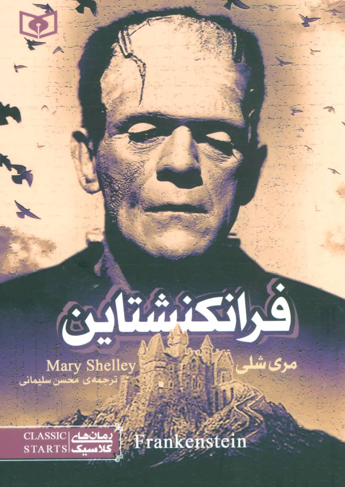
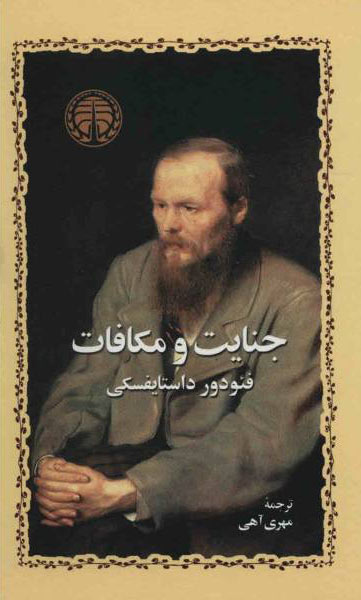
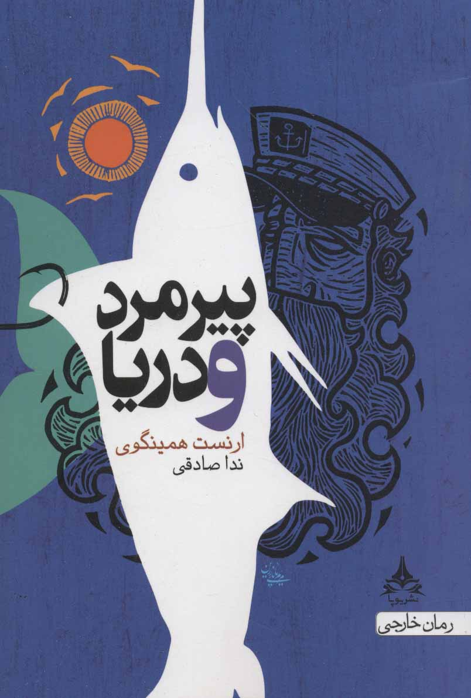

معرفی کتاب فرانکنشتاین اثر مری شلی
«فرانکنشتاین» نوشته مری شلی(۱۸۵۱-۱۷۹۷)، نویسنده زن انگلیسی است. مری شلی
بعدها در مقدمهای که بر رمان فرانکنشتاین نوشت، مدعی شد که فکر اصلی کتاب
را از یکی از کابوسهای شبانهاش الهام گرفته است؛ ولی بیشک تأثیر
داستانهای دلهرهآور (گوتیک) ، برقدرمانی معمول در آن زمان، نظریههای آن
دوران دربارهی پیدایش حیات و نیز اسطورهی مشهور یونانی پروتمه را
نمیتوان در خلقِ این اثر نادیده گرفت. در فرانکنشتاین، نویسنده از بسیاری
از عناصر و فضاهایِ ترسناک آن روزگار به خوبی استفاده کرده است. با این
همه، فرانکنشتاین یک رمان دلهرهآور معمولی نیست و شاید راز ماندگاری آن
نیز در همین نکته باشد. شاهکار مری شلی در واقع این بود که برای نخستینبار
علم را با داستانهای ترسناک آشتی داد. به زبان دیگر، برای اولینبار با
خلق هیولایی که محصول علم بود و نیز با استفاده از مجهولات علمی، نوع ادبی
جدید ''رمانتیک ترسناک علمی'' را به وجود آورد؛ کاری که در آن زمان سابقه
نداشت. از سوی دیگر فرانکنشتاین زمانی منتشر شد که بشر در آغاز راه
پیشرفتهای علمی و سرمست از بادهی علم بود. اما شلی از نخستین کسانی بود
که بوی خطر را حس کرد و با انتشار فرانکنشتاین هشدار داد که علم تجربی گاهی
نه تنها میوههای شیرینی به بار نمیآورد، بلکه چه بسا خود مایهی عذاب
دائمی بشر میشود.

معرفی کتاب فهرست شیندلر اثر توماس کنیلی
کتاب فهرست شیندلر، رمانی نوشته ی توماس کنیلی است که اولین بار در سال
1982 انتشار یافت. در سایه ی اتفاقات هولناک آشویتز، کارخانه داری آلمانی
به اسطوره ای زنده برای یهودیان شهر کراکوف در لهستان تبدیل شد. او مردی زن
باره، دائم الخمر و لذت طلب بود، اما برای آن ها به یک منجی مبدل گشت. این،
داستان خارق العاده ی اسکار شیندلر است: مردی که جان خود را به خطر انداخت
تا از مردم بی گناه در لهستان تحت اشغال نازی ها محافظت کند؛ مردی که به
خاطر جنگ، به انسانی با یک مأموریت بزرگ تبدیل شد. توماس کنیلی با استفاده
از شهادت های واقعی افراد نجات یافته توسط شیندلر، به شکلی درخشان، شجاعت و
زیرکی انسانی خوش قلب را در میانه ی جهنمی توصیف ناپذیر به تصویر می کشد.

معرفی کتاب جنایت و مکافات اثر فئودور داستایفسکی
کتاب جنایت و مکافات، رمانی نوشته ی فئودور داستایفسکی است که نخستین بار
در سال 1866 به انتشار رسید. راسکولینکوف، مردی مستأصل و بی چیز است که
تنها در زاغه های شهر سن پترزبورگ می چرخد و در ذهنش، خود را ورای قوانین
جامعه تصور می کند. اما زمانی که راسکولینکوف مرتکب قتلی می شود، فقط رنج و
عذاب، برایش باقی می ماند. او که وارد بازی تعقیب و گریز خطرناکی با یک
بازپرس پلیس شکاک شده، مجازات گناهش را بیش از هر وقت دیگری به خود نزدیک
احساس می کند. با پیشروی داستان، زنی به نام سونیا وارد زندگی راسکولینکوف
می شود که به نوعی تنها راه نجات شخصیت اصلی این رمان از رنج و عذاب است.
داستایفسکی در رمان جنایت و مکافات، قصه ی ساده ی قتل یک پیرزن را به عمیق
ترین و جذاب ترین رمان فلسفی قرن نوزدهم تبدیل کرده است. کتاب جنایت و
مکافات

معرفی کتاب آرزوهای بزرگ اثر چارلز دیکنز
کتاب آرزوهای بزرگ، رمانی نوشته ی چارلز دیکنز است که اولین بار در سال 1861
به چاپ رسید. این رمان که به شکل گسترده ای به عنوان برترین اثر دیکنز شناخته
می شود، به داستان پسر یتیمی به نام پیپ می پردازد که شاگرد مغازه ی آهنگری
است اما رویای اشرافی شدن را در سر می پروراند. در این داستان بی نهایت جذاب
درباره ی گناه، عذاب وجدان، انتقام و پاداش، شخصیت هایی به یاد ماندنی به چشم
می خورند: مگویچ که یک زندانی فراری است؛ استلا، دختری که تنها غرورش از
زیبایی اش پیشی می گیرد و البته خانم هاویشام که زنی مرموز و انتقام جو است.
رمان آرزوهای بزرگ که در واپسین دهه ی زندگی دیکنز به رشته ی تحریر درآمد و
نام خود را به عنوان یکی از محبوب ترین آثار دیکنز مطرح کرد، نشان دهنده ی
نگرش تاریک نویسنده نسبت به جامعه ی ویکتوریایی و طبقه بندی های اجتماعی و
مادی گرایی آن است.

معرفی کتاب پیرمرد و دریا اثر ارنست همینگوی
رمان پیرمرد و دریا، یکی از ماندگار ترین آثار ارنست همینگوی است. کتاب با
روایتی ساده و قدرتمند، داستان یک ماهیگیر کوبایی سالخورده ی بخت برگشته و
بزرگ ترین آزمون زندگی اش نبردی نفس گیر و سخت با یک نیزه ماهی غول پیکر در
دوردست های جریان خلیجی اقیانوس اطلس را حکایت می کند. در این رمان،
همینگوی با سبکی معاصر که بسیار برجسته و قابل توجه است، موضوعاتی کلاسیک
از قبیل جرأت و شجاعت در مواجهه با شکست و رسیدن دوباره به هدف را طرح ریزی
کرده و به شکلی جدید به مخاطب عرضه می کند. این رمان بسیار موفق که در سال
1952 نوشته شده است، قدرت و جایگاه همینگوی را در دنیای ادبیات به تثبیت
رساند و نقشی اساسی در کسب جایزه ی نوبل ادبیات در سال 1954، برای نویسنده
اش ایفا کرد. منتقدان، نوشتن کتاب «رمان پیرمرد و دریا» را در دنیای ادبیات
برابر با اختراع پیل الکتریکی در دنیای علم قلمداد کرده اند. کتاب مشهوری
که حالا از آن به عنوان شاهکاری از ادبیات قرن بیستم یاد می شود. همینگوی
در جایی گفته بود: «اولین نسخه از هر اثر مزخرف است». او به بازنویسی آثارش
بسیار اعتقاد داشت و هر بار به بررسی دوباره ی اثر می پرداخت. مشهور است که
می گویند همینگوی این اثر را بالغ بر دویست بار بازنویسی کرده است. همین
روحیه ی سخت کوشی نویسنده بود که باعث شد شاهکار رمان پیرمرد و دریا خلق
شود.

معرفی کتاب خوشه های خشم اثر جان اشتاین بک
رمان خوشه های خشم، اثر جان اشتاین بک و برنده ی جایزه ی پولیتزر، روایت گر
جریانات رکود بزرگ اقتصادی و مهاجرت های ناشی از طوفان های بزرگ داست بول
در دهه ی 1930 است و داستان خانواده ای کشاورز و اهل اوکلاهاما، به نام
خانواده ی جود که از موطن خود دور افتاده و مجبور به سفر به غرب و
کالیفرنبا شده اند را پی می گیرد. از دل رنج ها و محنت های این خانواده و
برخورد های مکررشان با واقعیت تلخ دوگانگی و عدم اتحاد کشورشان، داستانی
شکل می گیرد که بسیار انسانی و باورپذیر و در عین حال شگرف و وسیع است؛ قصه
ای با دید اخلاقی و پرداخت به جزئیات و در عین حال صاف و بدون پرده، حکایتی
تراژیک ولی درنهایت، تکان دهنده و امیدبخش. این رمان، تصویری است از کشمکش
میان قدرتمندان و مستضعفان، از عکس العمل یک مرد در برابر بی عدالتی و از
مقاومت و ایستادگی یک زن دربرابر سختی ها. رمان خوشه های خشم، به مشکلات و
سختی های دوره ی رکود بزرگ اقتصادی و ماهیت برابری و عدالت در آمریکا می
پردازد. این رمان بسیار قدرتمند از اشتاین بک، با روایت درگیرکننده، باشکوه
و واقع گرایانه ی خود، آمریکایی ترین اثر در بین آثار کلاسیک آمریکا در نظر
گرفته می شود.